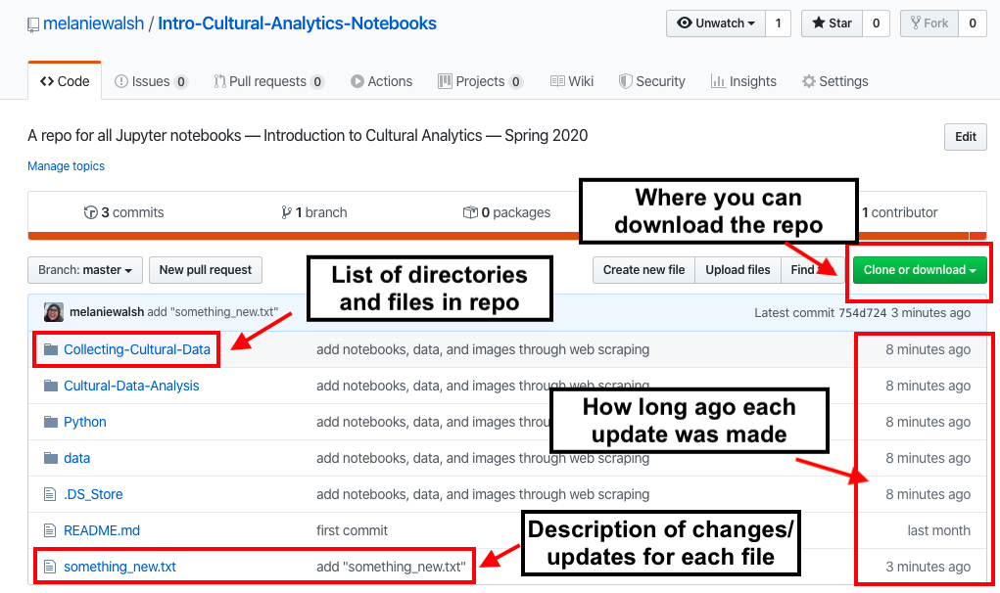
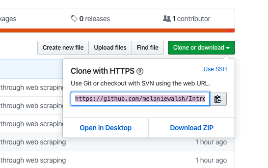

!git --versiongit version 2.21.1 (Apple Git-122.3)Git is a version control system, which helps you keep track of the changes that you make in a project. It’s a bit like Google Docs or MS Word’s Track Changes, except it’s typically used for code.
Even though Git is mostly used for code, it’s useful to think about Git in relationship to writing projects, which you might be more familiar with.
Let’s say you’re halfway through writing an essay when suddenly you come up with a brilliant idea for a different opening paragraph. Maybe you’re tempted to delete the opening paragraph that you’ve already written and start a new one, but you’re scared that the new paragraph won’t be quite as brilliant as it seems in your head.
With a version control system like Git, you would be able to save the current version of the essay, create another version of the essay with the seemingly brilliant new opening paragraph, and compare them. If you ended up liking the version with the new opening paragraph better, you could easily merge it into the main version of the essay. Even if you changed your mind the next day, you could still revert back to the version with the original opening paragraph. All the changes and updates would be carefully tracked and easily navigable.
These are some of the things that make Git so useful, especially when you start working on bigger projects and complicated code.
GitHub is a website/social network that’s built on top of the Git version control software. It allows you to store and easily publish projects. GitHub has become a primary place for people to publish datasets and share code. Remember The Pudding’s film dialogue data? They published it on GitHub!

It’s also important to foreground some recent backlash against GitHub regarding their decision to renew a contract with U.S. Immigrations and Customs Enforcement (ICE). This decision has motivated some employees, developers, and GitHub users to protest and/or boycott the platform.
You can read more about the controversy in “The Schism at the Heart of the Open-Source Movement” and Dear GitHub.

To use Git, you first need to install Git. Instructions for installing Git can be found here.
To install Git on a Windows computer, you need to install something called Git for Windows (which comes with something called Git Bash). The Digital Humanities Research Institute offers helpful step-by-step instructions here.
!git --versiongit version 2.21.1 (Apple Git-122.3)To download an entire GitHub repository, first click the green “Clone or download button” and then copy the URL.

Then, from the command line (or from Git Bash), type git clone and paste the URL for the desired GitHub repo.
!git clone https://github.com/melaniewalsh/Intro-Cultural-Analytics-Notebooks.gitCloning into 'Intro-Cultural-Analytics-Notebooks'...
remote: Enumerating objects: 48, done.
remote: Counting objects: 100% (48/48), done.
remote: Compressing objects: 100% (39/39), done.
remote: Total 48 (delta 7), reused 44 (delta 6), pack-reused 0
Unpacking objects: 100% (48/48), done.This git clone command should download a folder called “Intro-Cultural-Analytics-Notebooks,” which contains all the files and folders in the repository.
If you navigate into that folder and list its contents, you can see that it matches the GitHub website.
cd Intro-Cultural-Analytics-Notebooks//Users/melaniewalsh/Intro-Cultural-Analytics/Website-Content/Collecting-Cultural-Data/Intro-Cultural-Analytics-NotebookslsCollecting-Cultural-Data/ Python/ data/
Cultural-Data-Analysis/ README.md something_new.txtOk here’s where Git will be very convenient. If I update the “Introduction to Cultural Analytics” repository with new files, you can update your copy of the repository and get those new files with a single command git pull, which “pulls” down the updates from GitHub.
For example, I just added a new file called “something_newer.txt”, and if you run the git pull command…
!git pullremote: Enumerating objects: 4, done.
remote: Counting objects: 100% (4/4), done.
remote: Compressing objects: 100% (1/1), done.
remote: Total 3 (delta 1), reused 3 (delta 1), pack-reused 0
Unpacking objects: 100% (3/3), done.
From https://github.com/melaniewalsh/Intro-Cultural-Analytics-Notebooks
2fd60e3..c786385 master -> origin/master
Updating 2fd60e3..c786385
Fast-forward
something_newer.txt | 1 +
1 file changed, 1 insertion(+)
create mode 100644 something_newer.txtthen it will update the repository and download that file into the right place. To double check, you can run ls and see that “something_newer.txt” is now there.
lsCollecting-Cultural-Data/ README.md something_newer.txt
Cultural-Data-Analysis/ data/
Python/ something_new.txt